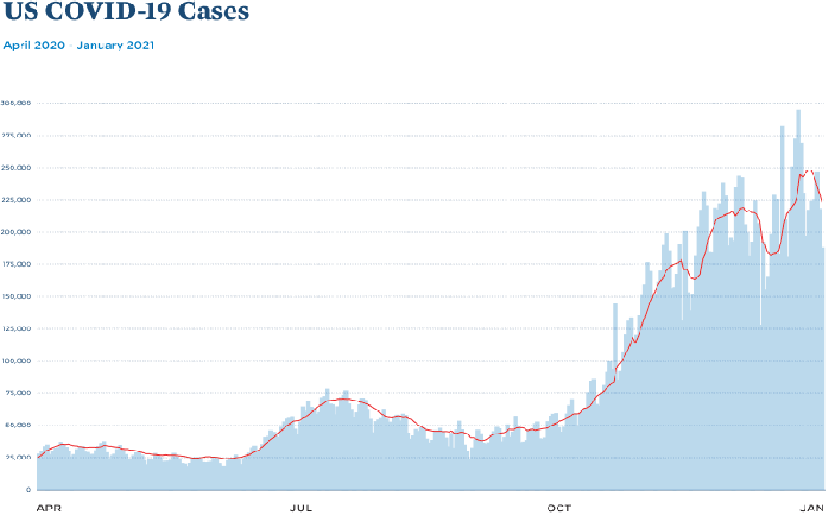
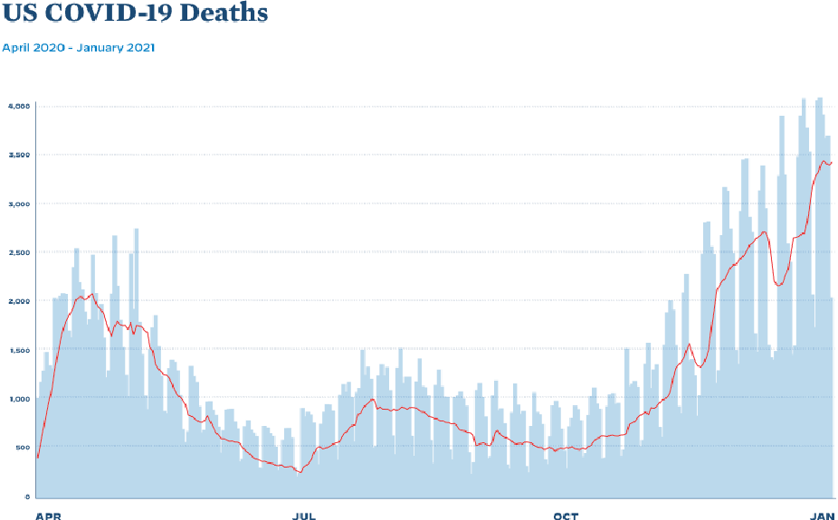
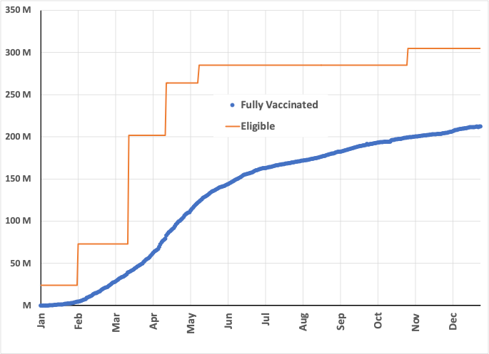

I’m Jonathan Burbaum, and this is Healing Earth with Technology: a weekly, Science-based, subscriber-supported serial. In previous installments of this serial, I have offered a peek behind the headlines of science, focusing on climate change/global warming/decarbonization. I have welcomed comments, contributions, and discussions, particularly those that follow Deming’s caveat , “In God we trust. All others, bring data.” Recently, I’ve pivoted to a more direct approach.
COP26 is behind us, and, like its 25 predecessor “Conferences of Parties”, it’s produced a series of toothless political commitments that are loosely based on recommendations given by large teams of scientists. Sadly, such approaches, while intellectually honest, are seriously limited in scope, and thus doomed to failure in the long run. Given the continued naive commitments of our leaders, I must now propose a more aggressive pitch:
One planet. One solution. Now.
That’s intentionally provocative, but not prescriptive. No treatment has all the answers. But we must prepare to act with clear-headed decisions—any partial solution should be required to bring the rest of the solution to the table as well, and to specify what the tradeoffs are. We won’t get too many chances to get it right.
You can read Healing for free, and you can reach me directly by replying to this email. If someone forwarded you this email, they’re asking you to sign up. You can do that by clicking here .
If you really want to help spread the word, then pay for the otherwise free subscription. I use any money I collect to increase readership through Facebook and LinkedIn ads.
Today’s read: 7 minutes.
I’ve been working hard on my next climate-based post, but we’re faced with the COVID-19 “omicron” surge, and I’ve had a feeling of deja vu. Specifically, a facile media narrative blames the Government for failing to anticipate issues. The endless news cycle provides an infinite set of “experts” to justify this blame game, all of whom have their prescription for fixing the problem. But, asking for foresight in hindsight is a fool’s errand, even if it sells ads.
I’ve labeled this post “pseudo-political” because I intend to use COVID to illustrate the interaction between Science (as practiced by scientists) and Government. However, this is not that far outside the theme because, back in May, when I launched this serial, I wrote:
If this rag finds an audience, it can trace its origins to the COVID-19 pandemic and the widespread failure of leaders worldwide to contain it. Historians will write, “If only they’d followed the science…” but Science isn’t a religion that has followers and infidels.
Science is a sport that wrestles truth from conjecture .
Stretching this metaphor somewhat, I believe that everyone should understand the game well enough to play as an amateur and appreciate it when played professionally. If our leaders had such an appreciation during the pandemic, then they could have dramatically reduced COVID’s impact. And if we can develop a broader appreciation in the future, perhaps we can avoid the catastrophic outcomes of global warming.
So, what are experts blaming the Government for? Lately, everything from having too few tests on hand to hoarding vaccines! To appreciate how silly these critiques are, I encourage you to explore the counterfactuals: What would pundits say if Government bought tests that expired unused? What about shipping vaccines abroad before providing all those needed domestically? As a voter, my main concern is that our leaders are making decisions efficiently given the facts at hand and acting ethically with my best interest at heart.
I’m not going to dig into specific accusations. That’ll churn up the waters unnecessarily and evoke antagonism. What I’m going to do instead is to provide an example of the scientific data that was available as the US Government sought to bring the pandemic under control. Then, I will attempt to draw a line from that data to decisions made based on the data. Finally, as the reader, I will ask you whether our leaders made the correct decision.
This approach necessarily puts the spotlight on one individual, Jeff Zients, the “White House Coronavirus Response Coordinator”. He’s not a scientist (unless you count his PoliSci degree from Duke), and he spent most of his career in business and management consulting. His claim to fame, before this role, was as the individual credited with fixing the initial problems with the Obamacare website.
The incoming Biden Administration developed a 7-part plan to address the threat. So, on Inauguration Day, January 20, 2021, here’s what Jeff had to work with:


At a year into the pandemic, we’d gotten better at preventing death (going from about 6% to about 2% fatality), but case counts were continuing to rise. We also had just gotten access to effective vaccines. In a clinical trial completed in December, involving tens of thousands of volunteers, these vaccines showed an astonishing 95% efficacy in preventing serious disease and death from COVID. Understandably, getting people vaccinated as quickly as possible would improve these numbers: The data showed that vaccination would predictably and dramatically reduce both fatality and the burden on the healthcare system. [As a side note, the big concern was the UK (Alpha; B.1.1.6) variant; The now-famous Delta (B.1.617) variant had been identified in India, but hadn’t yet been elevated to Greek letter status, and Omicron was still mutating in South Africa.]
On January 21, the day after his inauguration and less than a month after the first shots were administered, the New York Times reported , in an article entitled, “Biden Inherits a Vaccine Supply Unlikely to Grow Before April” on the President’s commitment to deliver 100 million doses in the first 100 days of his presidency, with skeptical experts opining on whether we had enough supply, on the one hand, and whether we’d set the bar too low, on the other. On that date, fewer than two million “high-risk” Americans had been fully vaccinated, and there was already a mad scramble on for getting a shot, with yoga teachers claiming to be healthcare workers, for example.
To reach or exceed Biden’s goal, what did Jeff need? Of course, it was “just” supply chain logistics, but speed was vital—Each vaccinated American would be twenty times less likely to require hospitalization due to COVID. But, as any observer will note, efficiency is not a feature of Government! {The idiom “ red tape ” has its historical origin in the description of government documents bound by the colorful tie.]
So Jeff needed to:
-
Make sure that manufacturers could make enough vaccines,
-
Make sure that vaccines were available where Americans needed them,
-
Make sure that the vaccines were stored & appropriately administered, and
-
Ensure that physicians prioritize the highest-risk individuals.
At the time, authorities had quantified only the last item. The CDC had issued a series of reports describing “phases” for the vaccine rollout, with the assumption that vaccine supply would be limited for “months”. But, because of uncertainties in logistics (as highlighted by the New York Times), no dates were set and were described simply Phase 1 (a-c) and Phase 2.
-
Phase 1a: Healthcare workers and nursing home residents (24M people eligible)
-
Phase 1b: Frontline essential workers and Americans >75 (49M people eligible)
-
Phase 1c: Americans 65-75 and those at high risk (129M people eligible)
-
Phase 2: Americans 16-65 (62M qualified people, not in Phase 1)
What happened? Well, 100 million Americans were fully vaccinated within Biden’s first 100 days (4/30/21). At least in California, where I live, Phases 1a and 1b were available immediately (earlier than February 4, 2021). Phase 1c started on March 15, and Phase 2 began on April 15, with an extension to Americans 12 and older beginning May 12! I’d say that’s primary evidence that Jeff did his job admirably. Supply was never truly an issue. Here’s the data:

The early adopters (like me) drove a lot of optimism about achieving a mostly vaccinated population (like Israel and Portugal). Still, ultimately the curve has leveled off not because shots aren’t available but because individuals are unwilling to take them. I’m convinced that the early and apparent success of the vaccination effort prodded Biden’s political opponents to act to derail the action. That effort is what caused the curve to bend. It’s undoubtedly not adherence to Science!
So, what would have happened if the vaccine rollout had not happened at all? With the Delta and Omicron variants (which appeared in unvaccinated populations), the virulence of the disease toward humans has increased. Let’s make a simplifying assumption that unvaccinated individuals are 20 times more likely to die from COVID than vaccinated individuals. Then, ceteris paribus (a great Latin oversimplification borrowed from economists, meaning “everything else equal”), then nearly every American would have caught COVID, resulting in ~4 million deaths from COVID alone. Our healthcare system would be more imperiled than it is already.
Of course, that’s just speculation. But, consider what might have happened with a second Trump administration. The players and playing field would have been much different, and judging from their previous approach to the pandemic, it’s likely that distribution and inocculations would have been left to the states, and production would have been left up to the private sector. Because the supply would invariably lag (the plan Biden inherited called holding back second doses due to supply constraints), the curve above would have risen more gradually. But, it’s entirely possible that a higher percentage of Americans would be protected by now because of the inevitable uproar and scandal.
Personally, I think Jeff Zients deserves a medal. Delays of months could easily have added hundreds of thousands of new deaths to our already bleak tally. If you disagree, I urge you to think about the counterfactual arguments as you consider what our options might have been if we lacked competence in the current administration.